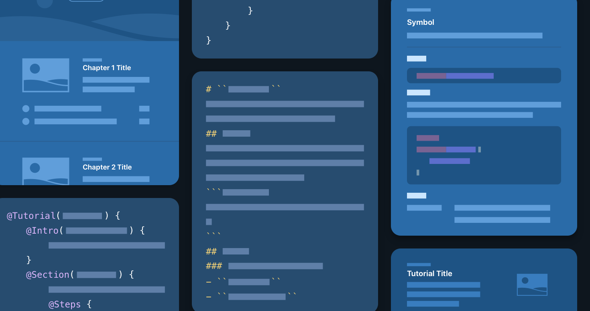

Tool
DocC
Produce rich API reference documentation and interactive tutorials for your Swift framework or package.
Overview
The DocC documentation compiler converts Markdown-based text into rich documentation for Swift frameworks and packages. You can preview the documentation in its published form as you work on it, and also host it on a website when it’s complete.
DocC syntax — called documentation markup — is a custom variant of Markdown that adds functionality for developer-specific documentation features, like cross-symbol linking, term-definition lists, code listings, and asides. You add documentation markup to your source code, compile it with DocC, and produce reference documentation for your APIs. You can also use documentation markup, along with a set of directives that instruct how DocC generates your content, to offer step-by-step tutorials that teach developers to use your APIs through interactive coding exercises or to craft comprehensive articles that explain specific technologies or topics.

Topics
Essentials
Documenting a Swift Framework or Package
Create developer documentation from in-source comments, add articles with code snippets, and add tutorials for a guided learning experience.
Documentation Content
Writing Symbol Documentation in Your Source Files
Add reference documentation to your symbols that explains how to use them.
Adding Supplemental Content to a Documentation Catalog
Include articles and extension files to extend your source documentation comments or provide supporting conceptual content.
Linking to Symbols and Other Content
Facilitate navigation between pages using links.
Adding Code Snippets to your Content
Create and include code snippets to illustrate and provide examples of how to use your API.
Documenting API with Different Language Representations
Create documentation for API that’s callable from more than one source language.
Structure and Formatting
Formatting Your Documentation Content
Enhance your content’s presentation with special formatting and styling for text and lists.
Adding Tables of Data
Arrange information into rows and columns.
Other Formatting Options
Improve the presentation and structure of your content by incorporating special page elements.
Adding Images to Your Content
Elevate your content’s visual appeal by adding images.
Adding Structure to Your Documentation Pages
Make symbols easier to find by arranging them into groups and collections.
Customizing the Appearance of Your Documentation Pages
Customize the look and feel of your documentation webpages.
Distribution
Distributing Documentation to Other Developers
Share your documentation by hosting it on a web server.
Documentation Types
API Documentation
Teach your APIs through reference documentation you create from code comments and extension files, or create detailed articles and conceptual guides.
Interactive Tutorials
Teach developers your Swift APIs through step-by-step, interactive content.
Shared Syntax
@CommentCaptures a writer comment that’s not visible in the rendered documentation.